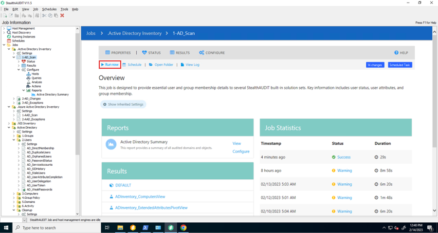
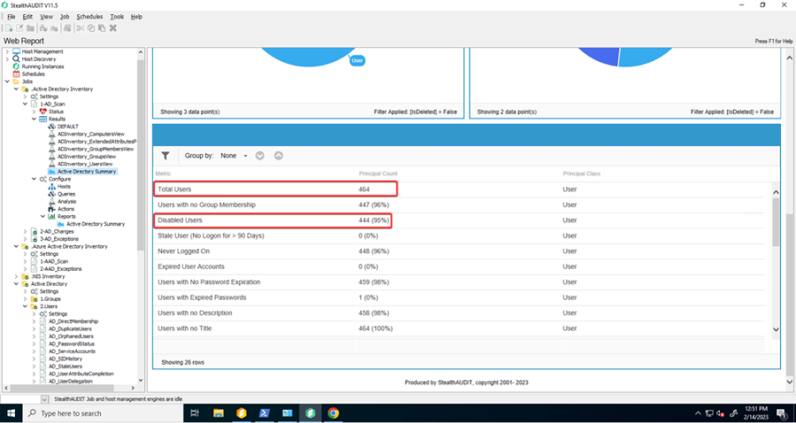

Overview
Licensing of StealthAUDIT is based on the quantity of enabled AD users in the audited environments. Periodically, you are asked to submit the results of the AD Summary report, specifically the difference between the Total Users and Disabled Users, to ensure compliance with your licensing agreement.
Instructions
To find this data:
-
Ensure .Active Directory Inventory has recently run or run now. Navigate to Jobs > .Active Directory Inventory > 1-AD_Scan and click Run Now
 -
Navigate to Jobs > .Active Directory Inventory > 1-AD_Scan > Results > Active Directory Summary
-
Take a screenshot or otherwise capture the values displayed in Total Users and Disabled Users
